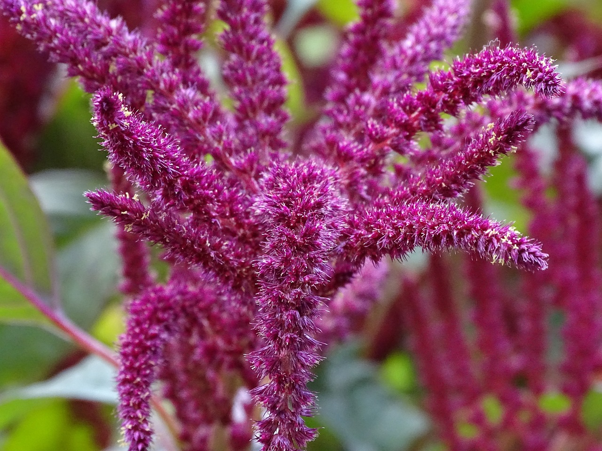

Amaranthus is a cosmopolitan group of more than 50 species which make up the genus of
annual or short-lived perennial plants collectively known as amaranths.



NOURISHING THE FUTURE, ONE SEED AT A TIME